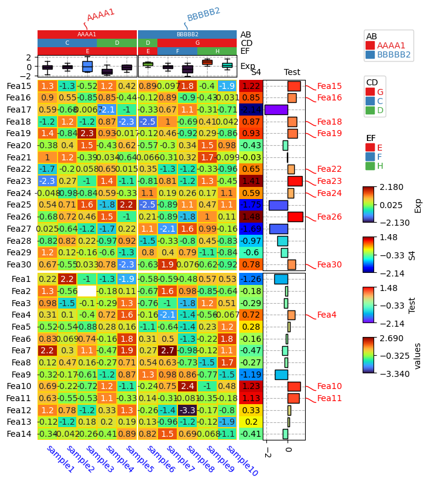

1. Import packages¶
[1]:
import os,sys
%matplotlib inline
import matplotlib.pylab as plt
import pickle
plt.rcParams['figure.dpi'] = 100
plt.rcParams['savefig.dpi']=300
# sys.path.append(os.path.expanduser("~/Projects/Github/PyComplexHeatmap/"))
import PyComplexHeatmap
from PyComplexHeatmap import *
2. Generate dataset¶
[2]:
#Generate example dataset (random)
df = pd.DataFrame(['AAAA1'] * 5 + ['BBBBB2'] * 5, columns=['AB'])
df['CD'] = ['C'] * 3 + ['D'] * 3 + ['G'] * 4
df['EF'] = ['E'] * 6 + ['F'] * 2 + ['H'] * 2
df['F'] = np.random.normal(0, 1, 10)
df.index = ['sample' + str(i) for i in range(1, df.shape[0] + 1)]
df_box = pd.DataFrame(np.random.randn(10, 4), columns=['Gene' + str(i) for i in range(1, 5)])
df_box.index = ['sample' + str(i) for i in range(1, df_box.shape[0] + 1)]
df_bar = pd.DataFrame(np.random.uniform(0, 10, (10, 2)), columns=['TMB1', 'TMB2'])
df_bar.index = ['sample' + str(i) for i in range(1, df_box.shape[0] + 1)]
df_scatter = pd.DataFrame(np.random.uniform(0, 10, 10), columns=['Scatter'])
df_scatter.index = ['sample' + str(i) for i in range(1, df_box.shape[0] + 1)]
df_heatmap = pd.DataFrame(np.random.randn(30, 10), columns=['sample' + str(i) for i in range(1, 11)])
df_heatmap.index = ["Fea" + str(i) for i in range(1, df_heatmap.shape[0] + 1)]
df_heatmap.iloc[1, 2] = np.nan
Test the row / col orders¶
[4]:
#Annotate the rows with average > 0.3
df_rows = df_heatmap.apply(lambda x:x.name if x.sample4 > 0.5 else None,axis=1)
df_rows=df_rows.to_frame(name='Selected')
df_rows['XY']=df_rows.index.to_series().apply(lambda x:'A' if int(x.replace('Fea',''))>=15 else 'B')
row_ha = HeatmapAnnotation(S4=anno_simple(df_heatmap.sample4.apply(lambda x:round(x,2)),
add_text=True,height=10,
text_kws={'rotation':0,'fontsize':10,'color':'black'}),
# Scatter=anno_scatterplot(df_heatmap.sample4.apply(lambda x:round(x,2)),
# height=10),
Test=anno_barplot(df_heatmap.sample4.apply(lambda x:round(x,2)),
height=18,cmap='rainbow'),
selected=anno_label(df_rows,colors='red'),
axis=0,verbose=0,label_kws={'rotation':30})
col_ha = HeatmapAnnotation(label=anno_label(df.AB, merge=True,rotation=15),
AB=anno_simple(df.AB,add_text=True),axis=1,
CD=anno_simple(df.CD,add_text=True),
EF=anno_simple(df.EF,add_text=True,
legend_kws={'frameon':False}),
Exp=anno_boxplot(df_box, cmap='turbo'),
verbose=0) #verbose=0 will turn off the log.
print(df)
print(df_heatmap)
plt.figure(figsize=(6, 8))
cm = ClusterMapPlotter(data=df_heatmap, top_annotation=col_ha,right_annotation=row_ha,
col_split=df.AB,row_split=df_rows.XY, col_split_gap=0.5,row_split_gap=1,
col_cluster=False,row_cluster=False,
label='values',row_dendrogram=False,show_rownames=True,show_colnames=True,
tree_kws={'row_cmap': 'Set1'},verbose=0,legend_gap=7,
annot=True,linewidths=0.05,linecolor='gold',cmap='turbo',
xticklabels_kws={'labelrotation':-45,'labelcolor':'blue'})
plt.show()
print(cm.row_order)
print(cm.col_order)
AB CD EF F
sample1 AAAA1 C E -0.435894
sample2 AAAA1 C E 0.401062
sample3 AAAA1 C E 0.025747
sample4 AAAA1 D E 0.042680
sample5 AAAA1 D E 0.116748
sample6 BBBBB2 D E 0.546759
sample7 BBBBB2 G F -0.172889
sample8 BBBBB2 G F -0.684011
sample9 BBBBB2 G H 1.218797
sample10 BBBBB2 G H -1.181558
sample1 sample2 sample3 sample4 sample5 sample6 sample7 \
Fea1 2.310509 1.163711 0.554770 0.704120 0.039607 -0.340140 1.225034
Fea2 0.104553 -0.922897 NaN -0.907159 1.886579 -0.506412 0.092423
Fea3 -1.131449 -0.100377 0.194432 -0.480500 1.766692 0.162166 -1.114485
Fea4 0.522682 -0.959591 1.429624 -1.913445 1.161106 -1.334468 0.624638
Fea5 0.552129 0.635001 -1.436391 -0.529352 -0.165155 0.515961 1.589784
... ... ... ... ... ... ... ...
Fea26 -0.728329 0.920248 0.115839 1.167786 -0.048162 -0.411418 -0.499543
Fea27 -0.044001 1.220391 2.189192 -0.195690 0.642799 0.945098 0.905234
Fea28 -0.836463 -0.220146 -0.972166 0.775959 -1.612789 -0.747306 0.705502
Fea29 -1.185042 0.613059 -1.321073 0.903606 -0.212800 1.131088 -1.123088
Fea30 -1.007635 0.456914 -1.062730 -2.284108 0.388160 -0.773514 1.396820
sample8 sample9 sample10
Fea1 0.764127 -1.054719 -0.347983
Fea2 -3.096844 0.554771 0.806322
Fea3 1.206961 0.175367 -0.057130
Fea4 -1.116360 -1.659853 1.056091
Fea5 1.214669 -0.588256 0.106962
... ... ... ...
Fea26 0.348598 -1.851479 0.441941
Fea27 -1.284252 0.693320 -1.899762
Fea28 0.668705 -0.209556 1.290237
Fea29 0.075679 -2.243249 0.572863
Fea30 -1.874503 0.687415 -1.975118
[30 rows x 10 columns]

[['Fea15', 'Fea16', 'Fea17', 'Fea18', 'Fea19', 'Fea20', 'Fea21', 'Fea22', 'Fea23', 'Fea24', 'Fea25', 'Fea26', 'Fea27', 'Fea28', 'Fea29', 'Fea30'], ['Fea1', 'Fea2', 'Fea3', 'Fea4', 'Fea5', 'Fea6', 'Fea7', 'Fea8', 'Fea9', 'Fea10', 'Fea11', 'Fea12', 'Fea13', 'Fea14']]
[['sample1', 'sample2', 'sample3', 'sample4', 'sample5'], ['sample6', 'sample7', 'sample8', 'sample9', 'sample10']]
[4]:
row_ha.annotations[1].df.iloc[:,0].describe()
[4]:
count 30.000000
mean 0.436333
std 0.790183
min -1.630000
25% 0.102500
50% 0.470000
75% 0.897500
max 1.650000
Name: sample4, dtype: float64
[5]:
df_rows
[5]:
| Selected | XY | |
|---|---|---|
| Fea1 | None | B |
| Fea2 | Fea2 | B |
| Fea3 | Fea3 | B |
| Fea4 | None | B |
| Fea5 | None | B |
| ... | ... | ... |
| Fea26 | None | A |
| Fea27 | Fea27 | A |
| Fea28 | Fea28 | A |
| Fea29 | None | A |
| Fea30 | Fea30 | A |
30 rows × 2 columns
[ ]:
[ ]: